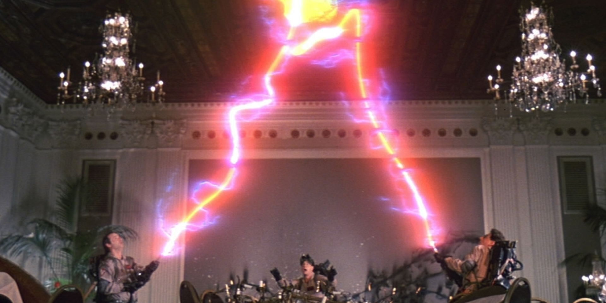

follow along at http://streams.how
Streams and You:
A Love Story
Calvin W. Metcalf
Applied Geographics
Who Am I?
Member of stream WG
Use streams all the time
Make a lot of maps

Less This
source: https://commons.wikimedia.org/wiki/File:Orlando-Ferguson-flat-earth-map_edit.jpg

More This
https://drivetexas.org, I wrote the backend...using streams
What is a stream?
a collection of data
Kinda like an array
that may not be available all at once
it is not a callback or a promise
That can be pipelined
supports back pressure, and makes it different from a generator
that may not fit in memory
this is in many ways a killer feature
Using streams
Writable streams
streams that take data
var writableFileStream = fs.createWriteStream('./path');
var writableHttpStream = https.request({
method: 'POST'
});
node streams are all binary streams
ones from npm can take objects
.write method to add data
.end method when you are done
can also take some data
Can give it a buffer, or a string
if you give it a string you can specify encoding
defaults to 'utf8', same encodings as buffers
you can also pass a callback
'finish' event is emitted when it's done writing everything
this will come up later
Readable streams
streams that provide data
var readableFileStream = fs.createReadStream('./path');
var writableHttpStream = https.request({
method: 'POST'
}, function(readableHttpStream) {
// do stuff
});
'data' event is is emitted when a stream has data.
this causes the stream to get you data to emit as fast as possible
'end' event when there is no more
grab all data into a
buffer and call a
callback
var outData = [];
readableHttpStream
.on('data', data => outData.push(data))
.on('error', callback)
.on('end', () => callback(null, Buffer.concat(outData)));
back pressure
when you (async) consume data slower then it is produced
don't do anything async inside a data event listener
pipeing allows you do do async stuff as it handles back pressure
pipe to to a simple write stream
readableFileStream.pipe(new stream.Writable({
write(chunk, encoding, next) {
doSomethingAsync(chunk, next);
}
}));
listen for the finish event
transform streams allow you to do it in steps
var transform = new stream.Transform({
transform(chunk, encoding, next) {
doElseSomethingAsync(chunk, (err, resp) => {
if (err) {
return next(err);
}
if (!resp) {
return next();
}
if (!Array.isArray(resp)) {
return next(null, resp);
}
for (let item of resp) {
this.push(item);
}
next();
});
}
});
details
if (err) {
return next(err);
}
if (!resp) {
return next();
}
if (!Array.isArray(resp)) {
return next(null, resp);
}
for (let item of resp) {
this.push(item);
}
next();
next is a callback so can take an error
if only emitting one thing, next can take a value
zero to Infinity things may be emitted
readableFileStream
.pipe(transform)
.pipe(new stream.Writable({
write(chunk, encoding, next) {
doSomethingAsync(chunk, next);
}
}));
real life example: json stream of some sort
function makeJsonStream() {
var first = true;
return new stream.Transform({
objectMode: true,
transform(chunk, encoding, next) {
if (first) {
this.push('[');
first = false;
} else {
this.push(',');
}
this.push(JSON.stringify(chunk));
next();
}
flush(done) {
this.push(']');
done();
}
})
}
lets break this down
setup:
function makeJsonStream() {
var first = true;
return new stream.Transform({
objectMode: true,
note the object mode
the transform:
transform(chunk, encoding, next) {
if (first) {
this.push('[');
first = false;
} else {
this.push(',');
}
this.push(JSON.stringify(chunk));
next();
}
wrap up:
flush(done) {
this.push(']');
done();
}
})
}
request bodies are also writable Streams
app.get('/path.json', (req, res) => {
res.type('json');
getData()
.pipe(JSONStream.stringify())
.pipe(res);
})
real life pipeline examples:
1. read filenames from google cloud storage
2. download files
3. pull 6 different stats out of each file
4. write it to a csv
5. upload to cloud
1. download geodata from ESRI server
2. convert to sane format
3. add some extra info like the date
4. if it's a line make and emit second feature that is a point
5. upload to a cloud service
great places to use streams
busting ghosts
ETL taskswhere the data could be massive
user uploadswhere data could be massive
any task where you only need a litle bit at a time